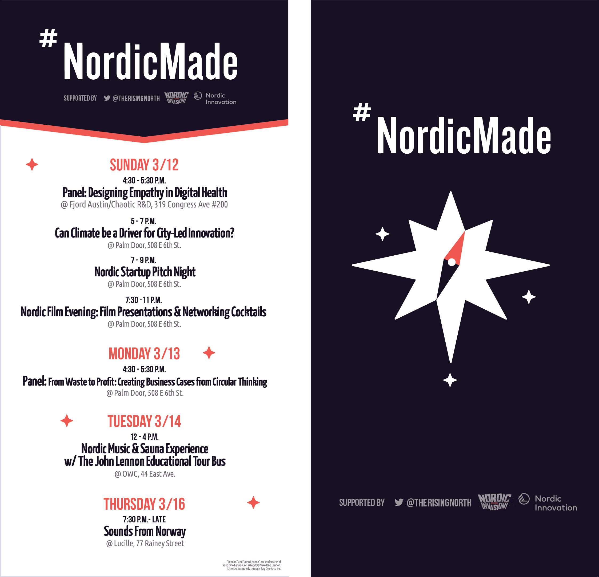
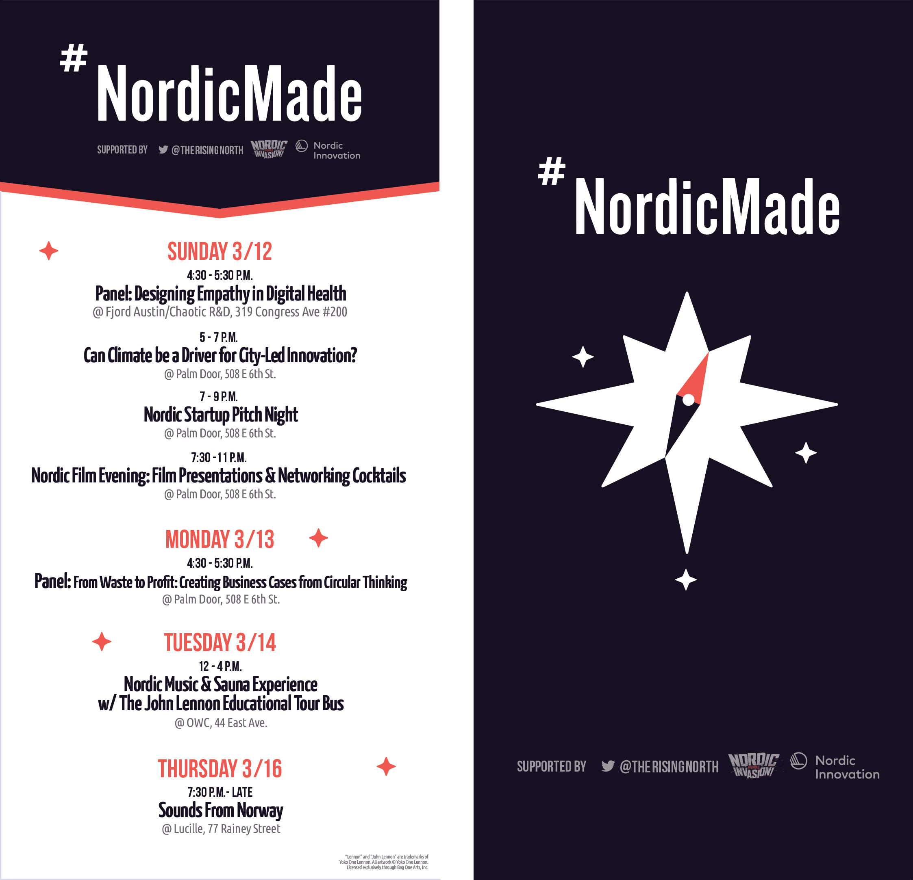
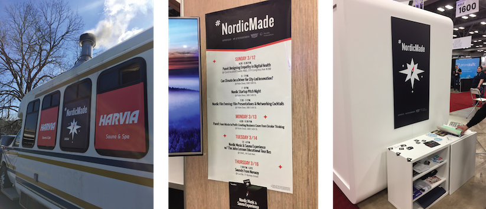
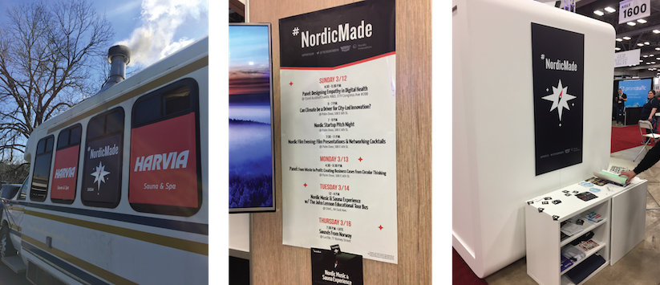

Research (2015–16)
Bruin Advertising & Marketing Team
Strategic Planning subteam member for Bruin Advertising & Marketing Team. Timeline: 1 year, leading up to a National Student Advertising Competition (NSAC). My role included market research, user interviews, and presenting actionable insights.
Bruin Ad Team placed 2nd out of 10 teams at the Southern California Regionals. The official NSAC 2016 prompt was to create a marketing campaign for the following 2017 year to grow Snapple™ in the US, measured by brand relevance, purchase frequency, and 'top of mind' brand awareness. Our Strategic Planning committee involved our full team in the research process in order to deliver a campaign strategy at NSAC from narratives we all understood.
Our team was divided into four subteams to reflect real roles within marketing. Our Strategic Planning subteam's goal was to create actionable insights about Snapple's consumers and competitive landscape. We expanded on and validated research with user focus groups and street interviews in targeted locations.


When our research phase was complete, we finalized a competitive landscape, target personas, and an actionable strategy for Snapple that met the NSAC prompt's defined business and brand goals. We fleshed out our consumer personas and provided clips and quotes from the consumer interviews so that our campaign insights would come from narratives we all came to understand. When we handed off our research deliverables to the other subteams, we wanted to hand off an understanding of the consumers, to tell their story and have some personality to play with.

Our Strategic Planning subteam ensured that any campaign decisions made by other subteams stayed relevant and effective at meeting the NSAC prompt, as well as making sure decisions were based off of our consumer and market research. It was important for our target consumers' narratives and campaign strategy to stay focused as the creative execution and distribution of the campaign kicked in. View our final comprehensive campaign.
Below: Excerpt from my application for AdTeam's Strategic Planning subcommittee. My research included scanning the internet for data and statistics about who uses the product and its competitors, as well as best practices for medical and sales interfaces and their landing pages. These revealed a target demographic and consumer habits, that the company could implement to convert specific users to purchase.

UX, Graphic design (2016)
LA Hacks
Website design and illustrations for LA Hacks, UCLA's annual hackathon with 1500 student participants and various company sponsors. Timeline: 6 months of working with my co-Designer and a team lead, and 3 weeks of working with developers and full team before event start. This project included handover of existing logo and goals from LA Hacks team, UX research, copy, graphic design, documentation, and attending LA Hacks.
Our website, copy, and branding successfully increased the amount of applicants who were female or from non-technical backgrounds, compared to previous years.


I worked on a design team within the larger student-run team of organizers, many of whom had been part of LA Hacks for multiple years. For 2016 the organizers had the goal of drawing in a range of participants, from students new to coding, to skillful returning coders, to hackathon minorities such as non-coders and females. My co-Designer and I paired our market research with participant feedback from LA Hacks 2015, to craft a visual style and website. As the event weekend neared, we brought in two designers to focus on apparel, event space design and videography. Together we incorporated the event's goals and user research throughout the hackathon experience.

With every design decision, from our website's structure to the hackathon shirt colors, it was important for my co-Designer and I to educate our full team about how users could perceive LA Hacks as inclusive and encouraging. We focused validation on event goals, target users, and best practices from research and event history.
Our full team would be representing LA Hacks 2016 on campus and online, so it was important for everyone to use social media and recruitment messaging that reflected our goals. We worked with our two developers to communicate goals and timeline constraints. We updated new features side by side as the website phased from its initial splash page teasing the event, to a site with detailed information about the event, to a day-of Live section with quick links that could be saved offline.


I wanted to keep learning after event go-live when my traditional 'Designer' role was done, to see how our organizers had executed this year's values and inclusivity goals. I stayed for much of the weekend, wearing my organizer shirt with the inviting pink bear, walking around the event floor during project demos, and attending lectures by women and minorities in tech to hear participants' and lecturers perspectives. Other members of our team would also attend the event and reflect on LA Hacks 2016 success metrics for what to improve for 2017.

Below: Concepts and visual design directions that my co-Designer and I presented to our team lead to reach a visual identity and website concept.

UX / UI (2016)
Dogtown Media
UX Designer for Dogtown Media, a fast-paced digital design and development agency in Los Angeles. Full time during university for one quarter and part time for a second quarter. My role included UX research, wireframing, client presentations, developer handover, and supporting with visual directions and UI.


Although I started at Dogtown with a focus in creating wireframes, our team's agile workflow and multiple ongoing client projects allowed me to step in to support my coworkers in various stages of client work. I built my familiarity and confidence in the UX research and design process. I learned the importance of workflow transparency—sharing project statuses during team standup meetings and scheduling time for feedback from my coworkers.


At Dogtown I worked with our clients both one-on-one and with our team of Senior Researcher, three UI Designers, Developer, and Business leads in a collaborative, mentorship environment.
Below: Client work for LaHaV Learning. Our Senior Researcher kicked off the project. From there I communicated expectations and next steps with the client and conducted research, wireframes, visual design and developer handover.

Below: Visual directions I worked on for Spackle app, from an initial wireframe.

Each week at Dogtown we presented some kind of design deliverable to various client personalities. For clients who are startups themselves, it is important to clearly outline the design-to-launch process and what is expected of all involved on the project.
We worked with Kirb to actualize their founder's business goals and creative vision. Our UX research findings and design directions were clearly validated with user interview quotes and competitor best practices. Research included interviewing a handful of users from Kirb’s MVP target location (greater Los Angeles area). Phone interviews focused on everyday user habits and services used. In-person interviewees were presented with competitor apps and an early, clickable prototype on their own mobile device as I observed user hesitations and expectations.
We used this same approach when presenting research findings to our startup clients EMNTR and PepperJelly, both with a goal of launching a mobile application.


We encouraged our clients to first focus on MVP features and we then highlighted opportunities for future development and features. For one particular project in its second phase of design and development with Dogtown, I worked alongside our Senior Developer to implement a new feature in the existing App Store application HowFastWifi. This workflow was a condensed round of research, wireframing, and validation from our previous market research and current App Store reviews. I applied the existing app’s UI style to the new elements—a Settings screen and map icons.

UX / UI (2014 & 2015)
Idean
Interaction Design Intern for Idean design agency in Palo Alto. Timeline: Two consecutive summer internships. My role included research, user interviews, wireframing, client meetings and presentations, and UI directions. My first internship I was immersed in a client project, and the following year I was assigned a solo intern project.


In 2015 for my solo intern project, the task was to research, create, and validate any interface that can provide business value to Idean. My company-specific solution was an internal repository tool for designers to find documentation and learnings from coworkers' previous projects. I researched internal industry tools and intervewed Idean employees. The project culminated in a presentation to various team leads within Idean, stressing the potential business value of the tool.


UX, Graphic design (2015)
Elffe
Landing page direction and logo design for Elffe at Summer of Startups 2015, a summer incubator program for student startups from Aalto University of Technology in Helsinki. Timeline: 1 month. My role included research, wireframes, graphic design, and working with our developer in Webflow (visual coding).

I worked with a small team of business and code developers. We began work over video calls, with myself at UCLA in California and my four teammates at Aalto University in Finland. These calls allowed us to align business goals with product and user research as we developed the name, identity, target audience and goals. I shortly joined my team in the Startup sauna workspace, where we continued to narrow our target audience, plan content and photography shoots, and design the landing page and build it together using Webflow.

Elffe activates senior citizens within their community through younger 'Elffe' helpers. Credibility on the website is achieved with quotes from all users involved: the senior service receiver, the young Elffe service provider, and the loved one ordering the service. The website uses real rather than stock visuals, and text narratives that emphasize authenticity and trust. All content is by Elffe, of Elffe. We also marked our Elffe helpers with affiliations and seals of approval from within their community, such as university and scout badges.
Below: Initial names and logo directions we went through with our team.

Elffe began picking up recognition and after the incubator ended, one of our teammates continued developing and narrowing the service and now runs it as Fiksari.

Multimedia (2012–2016)
B.A. in Design | Media Arts
Graphic design is a way for me to visually communicate the experience of a story, a feeling, a message. My Design Media Arts (DMA) Bachelors program at UCLA (University of California Los Angeles) was four years of intensive studio classes. Brainstorming, creating, and critiquing allowed me to build a strong foundation in basics such as form, color, hierarchy, typography, and motion. I grew confident in my message and style. DMA studio classes have a balance of projects that rely on self-discipline and creativity, group critiques for insights into one anothers' ways of thinking, and guidance from a talented professor in the field.

I was able to combine my Major in Design with a Minor in Digital Humanities, which included classes in Sociology, Anthropology, Information Studies, Writing analysis, and Debate. A research phase and critical thinking became important in my design.


I began by incorporating the user into my projects, thinking of how my design was being experienced and why. After an in-class exercise in HTML & CSS or a lesson of the fundamental rules of gameplay, I challenged myself to combine that with what I had been learning in my coinciding classes and my Interaction Design internship at design agency Idean.


My work at DMA culminated in my Senior Project installation piece, documented below. I juxtaposed video footage from my simple personal life that year, with shocking news footage my eyes and ears had been exposed to from classes and podcasts throughout the year. I felt the responsibility to use my skills in editing, interaction design, and research for a purpose—for exhibition visitors to visually experience with me this cognitive dissonance between personal vs environmental, societal responsibility that many students and young people today feel the pressure of.


DMA allowed me to explore my background in video and editing, which I had been passionate about since directing my friends in middle school to then studio Film classes in high school. My talented DMA professors gave critique in terms of form, emotion, detail. We were challenged to create videos from a vague prompt such as 'Red', or 'Light & motion'. Below is a video where I was able to showcase my strong editing style, utilise my experience working with actors, and challenge my eye for detail.
I also learned a completely new skill: animation. A geometric shape can convey emotion, behavior, space. Animation allowed me to combine the storyboarding and editing elements of video with illustration. More of my video work and DMA animations on Vimeo.com/dorasofia.
UX, Graphic design (2015)
Vivgo
App direction, design and logo for Vivgo mobile app. Timeline: 6 months. My role included UX research, wireframes, visual directions, UI, logo design, and developer handover. I joined the Vivgo team after the co-founders had a concept from their business perspective. A developer and I brought the concept to its physical, mobile app form.


Working with our developer side by side, I handed over UI specifications and communicated userflow. We worked together to adapt designs to development timeline, by prioritising key features. We were able to work in parallel post-wireframes, with our developer building out a working app while I focused on UI styling.


Vivgo aims to alieve a lack of access to local, authentic experiences as a traveler or student abroad. As a team we met once a week to share research and findings from each of our unique backgrounds (market research, legal, development contraints, design opportunities, etc). We focused the scope of the app; we were not in the business of tourist attractions, and had to have a realistically populated app on-launch, from which we could later scale up. Our MVP target demographic was the foreign-exchange student community at UCLA. We began building our community, and our startup was ultimately put on hold when our team went our different ways after graduating.


Below: Initial names, logo directions and UI designs we went through with our team.


Graphic design (2017)
#NordicMade
Marketing material designs for Nordic Made at SXSW 2017. Timeline: 2 weeks from brief to approval. This project included a brief research phase, handover of existing logo & messaging from #NordicMade, one round of iterations, legal and partner approvals, and handover of final design assets to the client.


 

#NordicMade is a group of various Nordic startup companies and community leaders. Although the group had limited visual presence apart from their existing logo, they had a strong news presence, cultural themes, and community of people involved.
It was important to design visuals and copy that reflect a Nordic message, that do not isolate any one country or company, and that consider the lively SXSW tradeshow context. Designing for various mediums and contexts meant designing flexible visuals and content hierarchy systems. Detailed designs had to translate into simpler versions, such as for shirt printing constraints and to maximize visibility on a small scale or from far away.
Below: Initial logo directions and evolution.


Because of the live element of SXSW, presentation slides were finalized day-of, weeks after my handover. It was important to handover presentation slides as templates that the #NordicMade team could populate themselves. Particiapting companies were able to associate themselves with the #NordicMade brand at its physical SXSW booth and "engage with passerbys" successfully.
 
